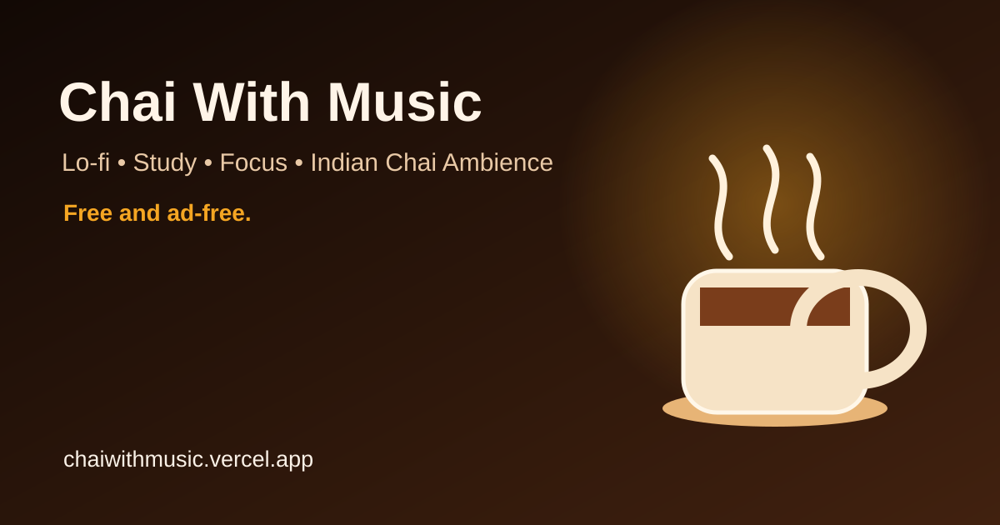

PROMOTION · PRESS · DISCOVERY
Chai With Music
Free, ad-free lo-fi, study, focus and relaxing music with an Indian chai ambience.

Official description
Chai With Music is a calm browser-based listening room for studying, coding, reading, working, relaxing and taking a quiet chai break. It combines lo-fi and focus-friendly listening with an Indian tea-stall atmosphere.
Short listing copy
Tagline: Lo-fi, study & focus music with Indian chai ambience.
One sentence: Chai With Music is a free, ad-free listening room for lo-fi, study, focus and Indian chai ambience.
Category: Music · Productivity · Study · Focus · Relaxation · Ambient
Best pages to reference
Music hub · Study music · Focus music · Lo-fi music · Relaxing music · Indian ambience · Chai ambience · Free resources
Who it is for
- Students looking for calm background music while studying.
- Developers and remote workers who want focus-friendly sound.
- Readers, writers and creators who prefer quiet ambient listening.
- People who enjoy Indian chai-stall atmosphere and slow moments.
Publisher guidance
Use the page that best matches your audience. Please do not copy-paste the same promotion into unrelated communities or automated directory networks. A relevant contextual mention is more useful than a bulk backlink.